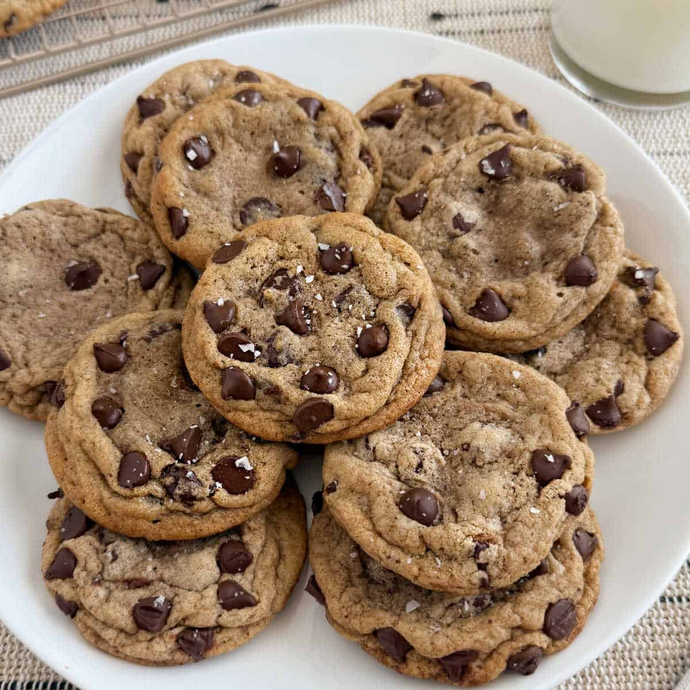

There is perhaps no greater icon in the world of baking than the Chocolate Chip Cookie. A perfect study in contrasts—crispy edges, a soft, chewy center, and the rich depth of melted chocolate—this cookie has grown from a happy accident into a global obsession.
Unlike many ancient recipes, the Chocolate Chip Cookie has a specific and relatively modern birthplace: the Toll House Inn in Whitman, Massachusetts. In the 1930s, chef Ruth Wakefield decided to chop up a bar of semi-sweet Nestlé chocolate and add the chunks to her basic sugar cookie dough. To her surprise, the chocolate didn't melt into the dough but held its shape, creating the very first "Toll House Crunch Cookie."
The recipe became an overnight sensation during World War II. Soldiers from Massachusetts shared the cookies they received in care packages with soldiers from other parts of the country, who soon began writing home asking their families for the "Toll House" recipe. By the 1940s, Nestlé had struck a deal with Wakefield to print her recipe on their packaging—a tradition that continues to this day—cementing the cookie's place in the American culinary canon.
In the modern kitchen, this cookie is a canvas for technique. While the core ingredients remain consistent, the results vary wildly based on how you handle them:
Pro Tip: To achieve that professional "bakery look," press a few extra chocolate chips into the top of your dough balls right before they go into the oven, and finish with a tiny pinch of flaked sea salt to balance the sweetness.
In a large bowl or stand mixer, combine the softened unsalted butter, brown sugar, and granulated white sugar. Beat them together on medium-high speed for several minutes until the mixture is pale, light, and fluffy. This process incorporates air, which ensures your cookies have a perfect lift.
Add the large eggs one at a time, beating well after each addition to ensure they are fully emulsified. Stir in the vanilla extract. The mixture should look smooth and creamy before you move on to the dry ingredients.
In a separate bowl, whisk together the all-purpose flour, baking soda, cornstarch, and sea salt. Gradually add this dry mixture to the wet ingredients, mixing on low speed just until the flour streaks disappear. Over-mixing at this stage can make the cookies tough, so stop as soon as the dough comes together.
Pour in the semi-sweet chocolate chips (or chunks). Use a sturdy spatula to fold them in by hand, ensuring the chocolate is evenly distributed throughout the dough. For an extra-gourmet look, reserve a handful of chips to press into the tops of the dough balls later.
For the best flavor and texture, cover the dough and refrigerate it for at least 2 hours (or up to 24 hours). Chilling prevents the cookies from spreading too thin in the oven and allows the flavors to deepen and concentrate.
Preheat your oven to 350°F (175°C). Scoop rounded tablespoons of dough onto a parchment-lined baking sheet, leaving space between each. Bake for 10–12 minutes, or until the edges are just barely golden brown while the centers still look slightly soft.
Remove the cookies from the oven and immediately sprinkle them with a pinch of flaked sea salt. Let them rest on the baking sheet for 5 minutes to firm up before transferring them to a wire rack. This patience ensures a chewy center and a crisp, buttery edge.